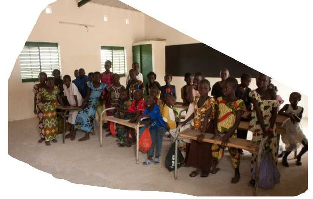
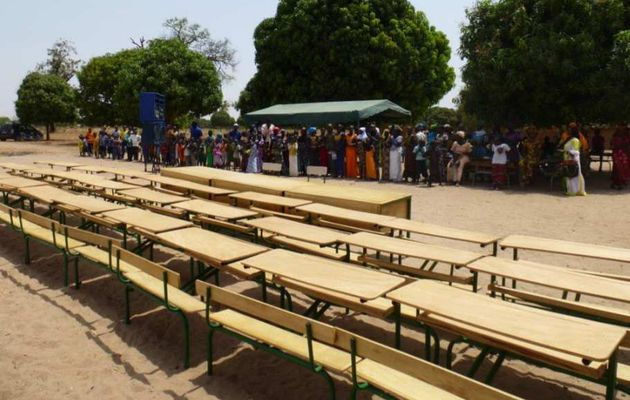
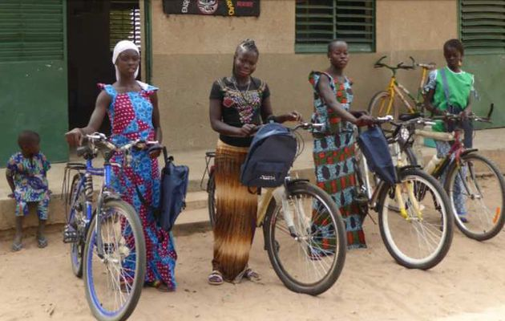
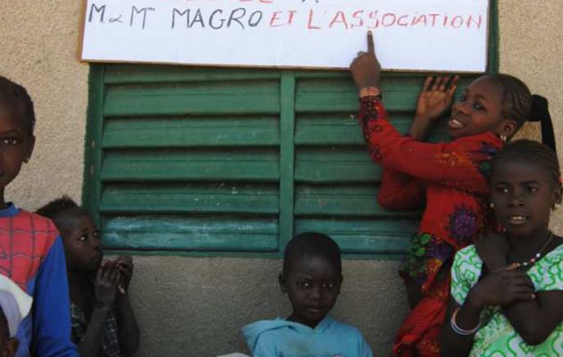
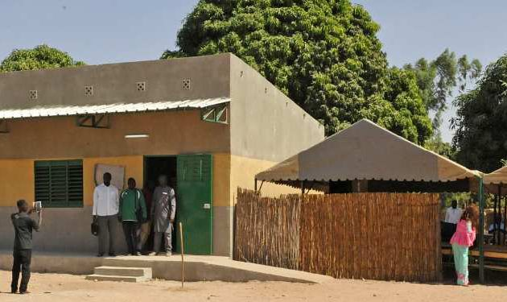

Une association basée à Chaponost (69630)
Depuis 2010, notre association œuvre pour le développement de l'éducation dans le village de N'DIAO au Sénégal. Notre mission est d'améliorer les conditions d'apprentissage des enfants et de soutenir le développement local.
Découverte du village de N'DIAO et de son école en paille lors d'un voyage culturel au Sénégal. L'enthousiasme de l'enseignant et l'envie d'apprendre des enfants nous ont incités à apporter chaque année les fournitures nécessaires.
L'école au début de notre aventure
Fabrication et livraison de 60 bureaux pour les élèves et 3 bureaux pour les maîtres. Une réalisation locale qui a permis de faire travailler un artisan de M'BOUR.
Installation des nouveaux bureaux dans les classes
Distribution de vélos pour faciliter l'accès à l'école pour les élèves qui habitent loin.
Les femmes du village avec leurs nouveaux vélos
Elle est réalisée sous tente car pour l'instant nous n'avons pas le budget pour une école en dur. 2 tentes de 35 mètres carrés chacune, fabriquées localement, ainsi que 30 petites tables et 30 chaises, également fabriquées sur place. Cette maternelle est inaugurée en janvier 2017. les enfants de 3 a 6 ans seront eux aussi dotés d'un cartable d' une boite de crayons de couleurs et d'un carnet à colorier.
Les enfants pendant leurs activités scolaires
Construction de nouvelles classes, installation de panneaux solaires, et développement continu des infrastructures: C'est le résultat d'un travail commun Tout le village a participe à la construction. Les pères de famille en fabriquant les briques avec le mouleur, les femmes et les jeunes filles en puisant de l'eau, les enfant en aidant suivant leur äge et leur force. C'est Une œuvre collective et tout le village est fier de son école
Livraison des équipements scolaires
Pour adhérer à l'association ou pour tout renseignement :
Téléphone : 06.87.43.04.43